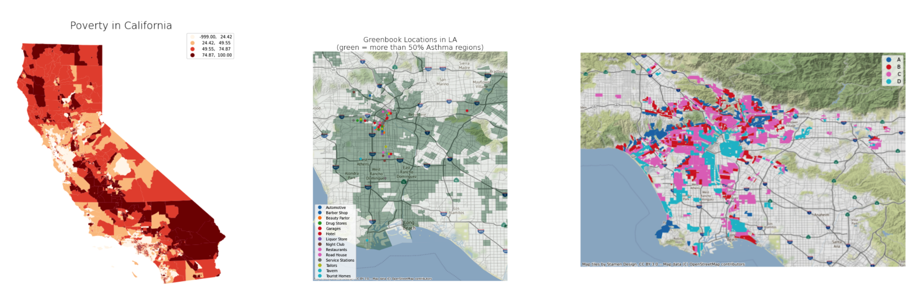
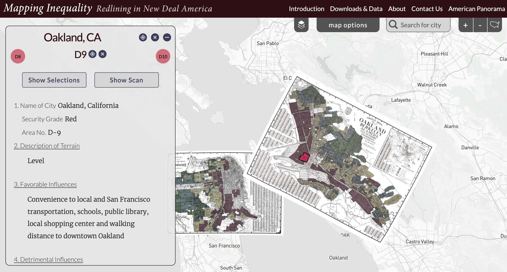

Visualizing Black Histories in California¶
April 27, 2022 
Mapping in Python¶
We start by importing a new module geopandas. This is a pretty high level geospatial library, widely used by spatial data scientists all over the world. Don’t worry about it too much for now, but know that it allows us to import a variety of spatial data formats, and plot them on a map.
Finding spatial data¶

Spatial data comes in many forms. Most popular are:
csv files with latitude longitude columns
Using geopandas¶
importgeopandas and give it an aliasgpduse
read_fileto bring spatial data to your notebookuse
plotto visualize
# import geopandas
import geopandas as gpd
---------------------------------------------------------------------------
ModuleNotFoundError Traceback (most recent call last)
<ipython-input-1-24b60cf6aa92> in <module>
1 # import geopandas
----> 2 import geopandas as gpd
ModuleNotFoundError: No module named 'geopandas'
Loading data¶
Let’s find some data to bring in.
# load spatial data into a variable "cal"
cal = gpd.read_file('data/calenviroscreen40shpf2021shp.zip')
Once the data is loaded, you can visualize it: .plot
# map it
cal.plot()
Let’s make the map bigger by adding an argument: figsize
# map it, but larger
cal.plot(figsize=(12,12))
Data view¶
Map layers (shapefiles, geojson files, etc) come with “attribute” data. You can look at the data through pandas commands.
First, look at the data fields available: .info
# show info about the data
cal.info()
# look at the first 5 rows using .head
# look at the last 5 rows using .tail
# look at a single random record using .sample
# plot a single random census tract (hint: chain multiple commands!)
Choropleth maps¶

Otherwise known as thematic maps, choropleth maps are a way to visualize polygonial data with colors. In other words, each region is colored a certain way, based on some criteria you define.
Using the .plot function, we can add arguments to make it a choropleth map.
columndefines which attribute you want to use to color the mapschemedefines how you want the colors to be distributedquantilesNaturalBreaksUserDefined
legendtrue or falsecmapchoose a color schemekhow many bins?
# create a layer from the cal enviroscreen data
layer1 = cal.plot(figsize=(12,12),
column='PovertyP',
scheme='quantiles',
legend=True,
cmap='OrRd',
k=4)
# give it a title
layer1.set_title('Poverty in California', fontdict={'fontsize': '25', 'fontweight' : '3'})
# turn the axes off
layer1.set_axis_off();
Try this!
In the code cell that created the map above, what happens when you do the following?k value to 2column value to a different attributecmap value to a different color schemeUser defined bins¶
map = cal.plot(figsize=(12,12),
column='AsthmaP',
legend=True,
cmap='Greens',
scheme='user_defined',
classification_kwds={'bins':[80,100]})
# give it a title
map.set_title('Asthma in California', fontdict={'fontsize': '25', 'fontweight' : '3'})
# turn the axes off
map.set_axis_off();
It's your turn!
Create a map with different attributes, colors, titles, etc. Be creative! And post your final output to the class gallery.Green Book¶

# bring in greenbook data csv file
green = gpd.read_file('data/47greenbookla.csv')
# convert the csv file into a "geodataframe"
green = gpd.GeoDataFrame(green,
geometry=gpd.points_from_xy(green.Longitude, green.Latitude),
crs="EPSG:4326")
green.head()
green.plot()
# bigger, styled
map = green.plot(figsize=(12,12),column='Type',legend=True)
# give it a title
map.set_title('Greenbook Locations in LA', fontdict={'fontsize': '25', 'fontweight' : '3'})
# turn the axes off
map.set_axis_off();
Multiple layers¶
We have learned how to visualize single data layers. But what if we wanted to map multiple layers? To do so, we introduce two new libraries to our project.
Maplotlib allows us to create multiple plots, or multiple layers on a single plot
Contextily allows us to add a basemap to our map
import matplotlib.pyplot as plt
import contextily as cx
The syntax to create a plot with matplotlib is a bit more complicated. But get the hang of it, and you will learn how to create layered maps in no time!
# set up the "subplot"
# note that "ax" is the single plot's identifier
fig, ax = plt.subplots(figsize=(12,12))
# add the
green.plot(
ax=ax, # add this layer to the "ax" plot
column='Type',
legend=True,
markersize=100)
# give it a title
ax.set_title('Greenbook Locations in LA', fontdict={'fontsize': 25, 'fontweight' : 3})
# turn the axes off
ax.set_axis_off()
# add a basemap
cx.add_basemap(ax, crs=green.crs.to_string())
Mapping greenbook locations with enviroscreen data¶
Check: are the data layers in the same projection?
cal.crs
green.crs
# project greenbook data to WGS 84
cal=cal.to_crs(4326)
# check the crs now
cal.crs
# set up the "subplot"
# note that "ax" is the single plot's identifier
fig, ax = plt.subplots(figsize=(12,12))
# add the enviroscreen layer
cal.plot(
ax=ax, # this puts this layer in the "ax" plot
column='AsthmaP',
legend=False,
cmap='Greens',
scheme='user_defined',
classification_kwds={'bins':[80,100]})
# add greenbook locations
green.plot(
ax=ax,
column = 'Type',
legend=True
)
# turn the axes off
ax.set_axis_off();
Zoom in to a specific layer¶
# set up the "subplot"
# note that "ax" is the single plot's identifier
fig, ax = plt.subplots(figsize=(12,12))
# add the enviroscreen layer
cal.plot(
ax = ax,
column = 'AsthmaP',
cmap = 'Greens',
scheme = 'user_defined',
alpha = 0.5,
classification_kwds = {'bins':[50,100]})
# add the greenbook locations
green.plot(ax = ax,
column = 'Type',
markersize = 100,
legend = True)
# get the bounding box of the greenbook data points
minx, miny, maxx, maxy = green.geometry.total_bounds
# set the extent of the map to these bounds
ax.set_xlim(minx - 0.1, maxx + 0.1) # added/substracted value is to give some margin around total bounds
ax.set_ylim(miny - 0.1, maxy + 0.1)
# give it a title
ax.set_title('Greenbook Locations in LA\n(green = more than 50% Asthma regions)', fontdict={'fontsize': '20', 'fontweight' : '3'})
# add a basemap
cx.add_basemap(ax, crs=green.crs.to_string())
# turn the axes off
ax.set_axis_off();
Redlining¶
An LA example¶
red = gpd.read_file('https://dsl.richmond.edu/panorama/redlining/static/downloads/geojson/CALosAngeles1939.geojson')
red.head()
# set up the plot
fig, ax = plt.subplots(figsize=(12,12))
# add the redlining data
red.plot(
ax=ax,
column='holc_grade',
legend=True,
)
# give it a title
ax.set_title('Redlining in Los Angeles', fontdict={'fontsize': '20', 'fontweight' : '3'})
# add a basemap
cx.add_basemap(ax, crs=green.crs.to_string())
# turn the axes off
ax.set_axis_off();
# filter data to only show where holc_grade is "D"
D = red[red['holc_grade'] == 'D']
D
fig, ax = plt.subplots(figsize=(12,12))
# plot "D" redlined areas
D.plot(
ax=ax,
legend=True,
color='red',
alpha=0.5
)
# add the greenbook locations
green.plot(
ax=ax,
column = 'Type',
markersize = 100,
legend=True)
# give it a title
ax.set_title('Redlining Grade "D" and Greenbook Locations in LA', fontdict={'fontsize': '20', 'fontweight' : '3'})
# add a basemap
cx.add_basemap(ax, crs=green.crs.to_string())
# turn the axes off
ax.set_axis_off();
It's your turn!
Create a map from a different redlining location and post your final output to the class gallery.Interactive maps¶
A fun teaser!
import plotly.express as px
fig = px.scatter_mapbox(green,
lat=green.geometry.y,
lon=green.geometry.x,
hover_name="Type",
hover_data=['Type','Name','Street Address'],
color="Type",
zoom=10,
height=600,
mapbox_style='stamen-toner')
fig.update_traces(marker={'size': 15})
fig.show()